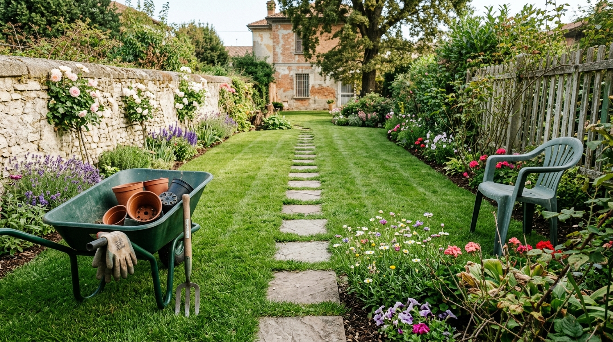
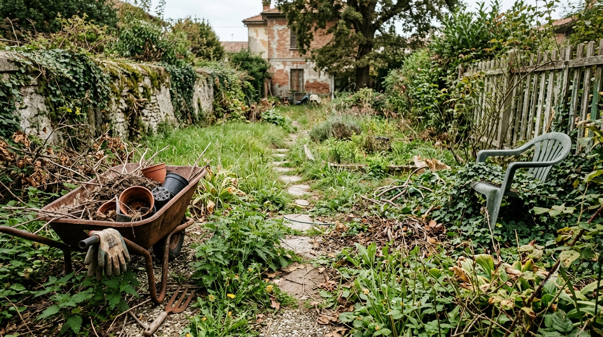
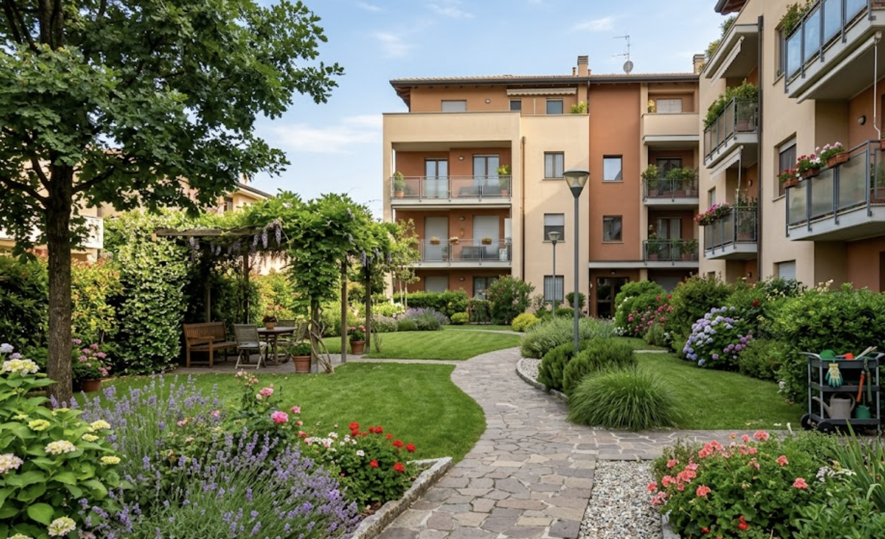
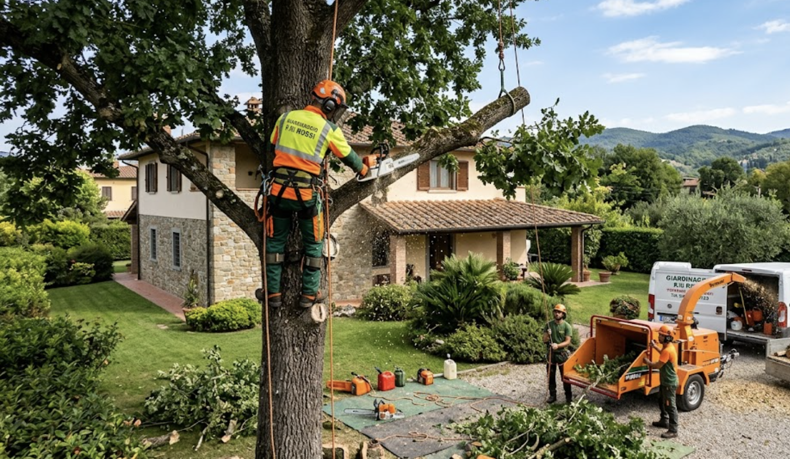
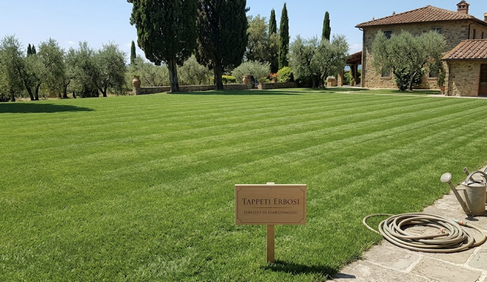
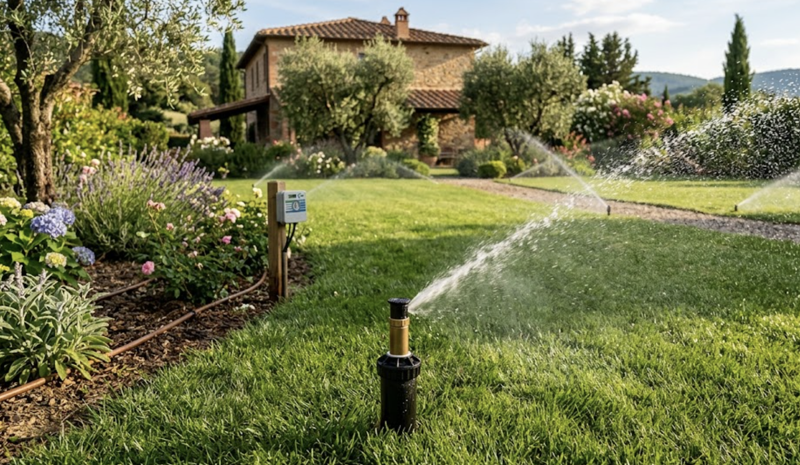
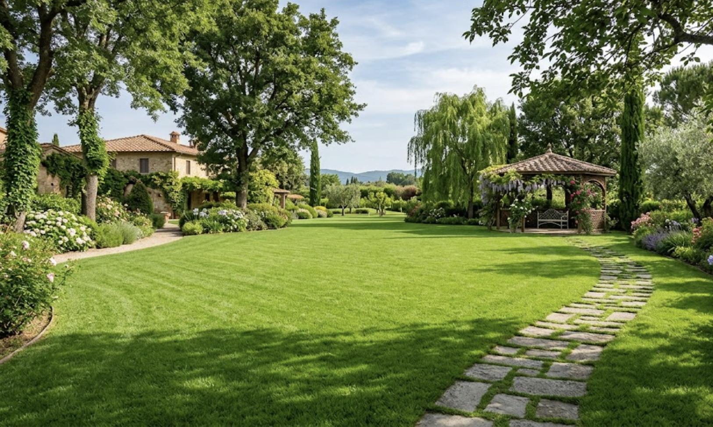

Trasformiamo il tuo giardino
nel tuo angolo di paradiso.
Incontra Lapo Bacci: giardiniere professionista a Firenze. Dal prato all'inglese perfetto alla potatura specializzata di alberi d'alto fusto. Solo risultati concreti e certificati.
AGENDA DEL VERDE: Luglio
Cosa serve al tuo giardino questo mese?
La passione di una vita, la competenza di un Dottore Forestale
Mi presento, sono Lapo Bacci. La grande passione per il verde, per la natura, per le piante, insita in me sin da bambino, mi ha portato a svolgere l'attività di giardiniere a Firenze da oltre dieci anni.
Sono Laureato in Scienze Agrarie e Forestali all'Università di Firenze, un bagaglio di studi che mi permette di unire la pratica a una profonda conoscenza scientifica e fitosanitaria.
Mi occupo di progettazione di giardini e spazi verdi a Firenze, nonché della loro manutenzione. Con l'ausilio della tecnologia posso fornirvi un rendering fotografico e planimetrico di ogni progetto verde, per farvi vedere in anticipo il risultato finale.
Inoltre, mi occupo di impianti di irrigazione, potatura ed abbattimento di piante ed alberi, anche di grandi dimensioni, in totale sicurezza. Svolgo la mia attività principalmente a Firenze e Prato, ma sono sempre disponibile a valutare interventi anche in altre zone geografiche.
La concretezza dei risultati
Guarda le nostre trasformazioni
Trascina il cursore centrale a destra e sinistra per vedere il prima e il dopo di un nostro intervento di ripristino del manto erboso e sagomatura arbusti.


Interventi Professionali
Tutti i Servizi di Giardinaggio
Che si tratti di una potatura d'alto fusto o della cura quotidiana del prato, interveniamo a Firenze con tempismo e la certezza della massima qualità. Clicca su ciascun servizio per scoprinne i dettagli.

Cura Giardini e Condomini
Piani di manutenzione ordinaria con cadenza settimanale o mensile. Taglio erba, pulizia aiuole, concimazione stagionale e controllo dello stato di salute generale delle piante.

Potature e Abbattimenti
Cura artistica e fitosanitaria di siepi, arbusti sagomati e alberi da frutto. Gestione qualificata e sia cura di piante ad alto fusto con attrezzatura a norma di legge.

Tappeti Erbosi
Realizzazione e manutenzione di tappeti erbosi a Firenze. Posa prato a rotoli a pronto effetto o semine programmate a seconda del microclima e della destinazione d'uso.

Impianti di Irrigazione
Progettazione, posa tubature e taratura centraline elettroniche. Sistemi di microirrigazione a goccia per terrazze e irrigatori a scomparsa per tappeti erbosi, ottimizzando il consumo idrico.

Progettazione di Spazi Verdi
Prima di piantare, visualizza il risultato. Creazione di planimetrie reali e rendering 3D basati sulle dimensioni effettive della tua proprietà per un giardino cucito su misura.
Fitosanitari e Antizanzare
Servizi professionali contro zanzare, afidi e insetti nocivi. Diserbo selettivo del prato e disinfestazione eseguiti con l'uso di prodotti certificati in possesso di regolare patentino.

Calcola un Preventivo Indicativo
Forniamo una prima stima realistica basata sulla superficie e sui lavori richiesti.
*Iva esclusa. Il prezzo reale verrà confermato dopo il sopralluogo gratuito.
Fotografie Reali di Lavori Svolti
Alcune delle nostre realizzazioni. Nessun modello 3D fittizio, solo giardini reali manutenuti direttamente sul territorio fiorentino.


Mettiamoci in
Contatto
Richiedi un sopralluogo gratuito. Lapo verrà personalmente a esaminare il tuo giardino o terrazzo, fornendoti una consulenza specializzata sul posto.